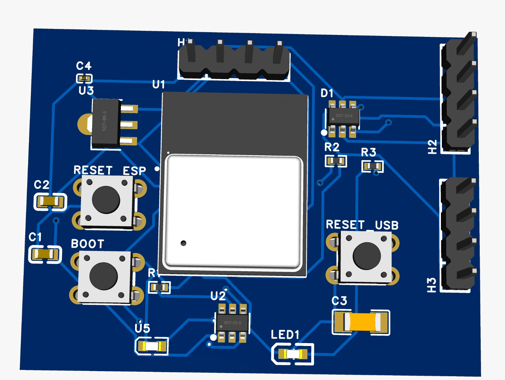
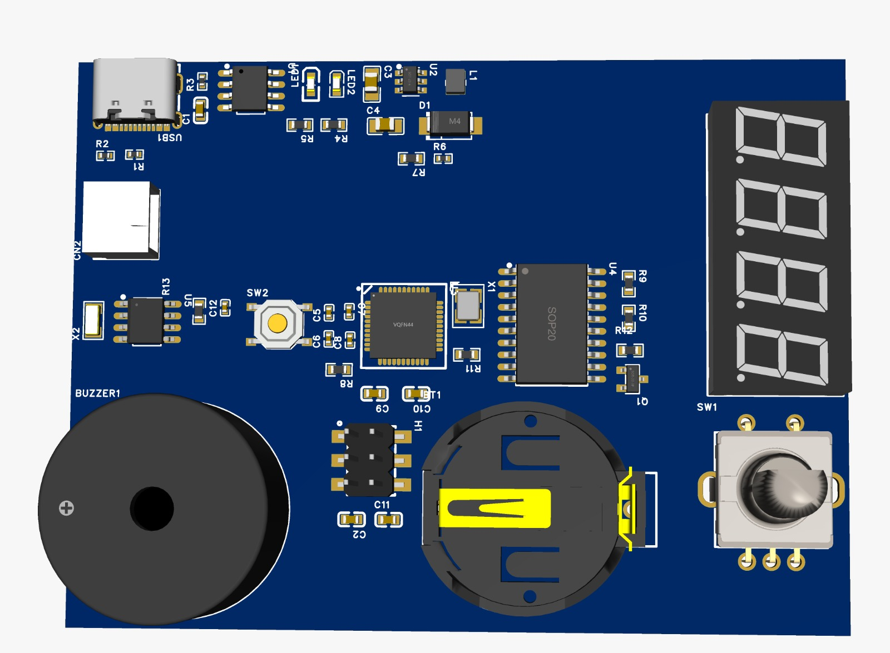

🔌 USB Recovery Board
Sistema desenvolvido para recuperação automática de portas USB em bancadas de testes industriais.

Esquemático

Visualização 3D

Sistema desenvolvido para recuperação automática de portas USB em bancadas de testes industriais.

Desenvolvimento completo de hardware embarcado baseado em ATmega32U4.

